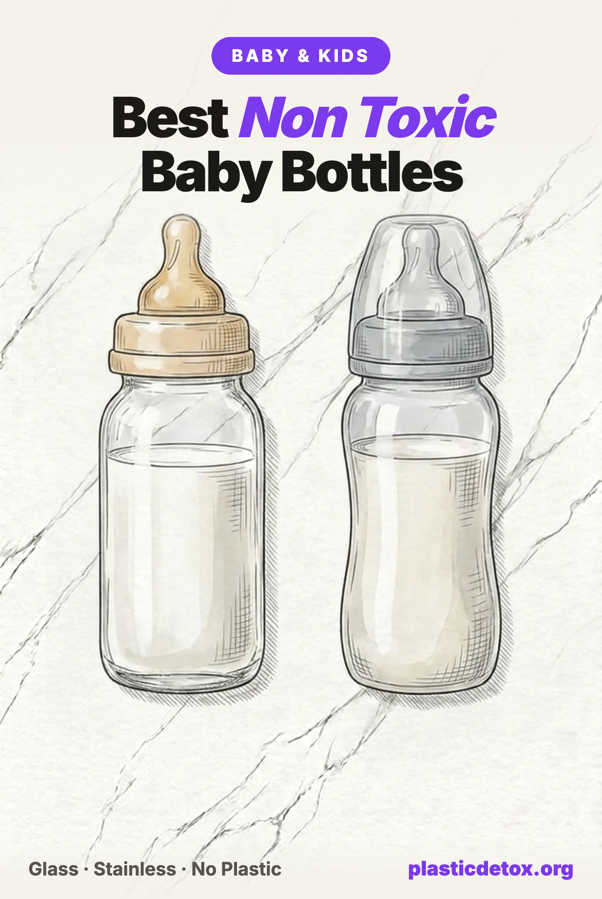

Best Non Toxic Baby Bottles (2026): Microplastics, Materials, and What Actually Passed

The 30 Second Summary
- Plastic bottles shed millions of particles per feed. Polypropylene bottles released 1.3 to 16.2 million microplastic particles per litre of prepared formula, rising to 55 million per litre at 95 degrees Celsius (Nature Food, 2020).
- BPA free was never the point. Those were BPA free bottles. In 2024 the makers of Dr. Brown's, Philips Avent, Nuk, and Tommee Tippee bottles were hit with class actions over exactly this gap between the label and the particle release.
- Heat is the variable you control. Formula safety requires water at 70 degrees or hotter, which is precisely the temperature that degrades plastic. Do the hot step in glass and the conflict disappears.
- Glass is inert, but check the paint. Independent XRF screening found lead in 91 percent of glass bottles with painted logos or markings. Choose etched or plain glass, not decorated glass.
- Best overall: Lifefactory, borosilicate glass with no markings printed on the glass at all, since the graduations are moulded into the silicone sleeve. Evenflo Classic Glass is the budget answer at roughly two dollars a bottle.
- For travel: single wall stainless steel, which is unbreakable and sheds nothing. Skip insulated double wall baby bottles, where the lead solder problems have been found.
A bottle fed baby drinks from the same vessel six to eight times a day, every day, through the period when their brain is developing faster than it ever will again. Whatever the bottle gives up, they get all of it, at a body weight of a few kilograms. There is no other product in a home where the exposure is this concentrated and this repetitive.
Which is why the 2020 finding was so uncomfortable. Researchers did not stress test the bottles or invent a worst case. They followed the World Health Organization's own formula preparation guidance, step by step, and measured what came out. The answer was millions of plastic particles per litre.
This guide covers what that research actually found, the parts of it that get overstated, why silicone teats and even glass and stainless have their own catches, which popular bottles fail and why, and the specific bottles that survive every screen we could apply.
Best Baby Bottles at a Glance
The good news in this category, unlike most of what we cover, is that the right answer is cheap. Every bottle below is glass or single wall stainless, so none of them shed particles into the milk at any temperature, and the cheapest of them costs about two dollars. They are separated by what is printed on the glass and by what independent testing found, not by anything a marketing page would tell you. The full breakdown of why the popular brands fail is further down.

Lifefactory Glass with Sleeve
Borosilicate glass with no printing on the glass, since the ounce and millilitre graduations are moulded into the removable medical grade silicone sleeve. Vented silicone teat. Sleeve converts the bottle to a storage or toddler cup.
View →
MAM Feel Good Glass
Borosilicate glass, 9 oz, wide neck, silicone teat with vented base. No detectable lead when XRF screened as part of a 32 bottle survey. Not named in the 2024 microplastic litigation.
View →
Evenflo Classic Glass
Tempered glass, 8 oz, six pack, about two dollars per bottle. Silicone teat, standard neck fits most pumps and teats. XRF testing found no lead in the white painted markings and 11 ppm cadmium in the glass, both well under the limits.
View →
Pura Kiki Stainless (Non Insulated)
Single wall 304 stainless steel, 9 oz, silicone sleeve and teat, unbreakable. Choose the non insulated model only. Older insulated versions used a lead sealing dot in the base.
View →Why This Is Harder Than It Should Be
Every material in this category has a catch, which is why so much of the advice online is confidently wrong in one direction or another.
Plastic is the default because it is light, cheap, and unbreakable, and it accounts for the overwhelming majority of the market. It is also the one material that measurably degrades at the temperatures formula preparation requires.
Silicone is sold as the natural alternative to plastic, and it is genuinely more heat stable. But every bottle in existence, including glass and stainless ones, has a silicone teat, and silicone is not inert under repeated steam.
Glass solves the particle problem completely and introduces a different one, because the paint used for logos and measurement markings on glass bottles has repeatedly tested positive for lead, occasionally at levels well over the federal limit for children's products.
Stainless steel solves both and is unbreakable, but the base of some double walled insulated bottles is closed with a sealing dot that has, in specific products, been solid lead.
None of that means the situation is hopeless. It means the correct answer is specific rather than general: the material matters, and so does the version of it you buy. A plain glass bottle with etched markings has none of these problems. A decorated glass bottle has one of them. The distinction is invisible in most product roundups, which is why we are spelling it out.
What Actually Matters: Material, Then Markings, Then Heat
If you do nothing else, do these three in this order.
1. Material. This is the whole game. Moving from polypropylene to glass or stainless removes the largest single source of a bottle fed infant's microplastic intake, and it does so permanently rather than by careful technique. Nothing else in this article comes close to the size of that change.
2. Markings. Once you are in glass, prefer a bottle whose measurement lines and logo are moulded into the glass or into a silicone sleeve rather than painted on. Painted markings are not automatically leaded, and some tested clean, but paint is the only part of a glass bottle that has ever failed a lead test. Choosing a bottle without it removes the question rather than answering it.
3. Heat. Whatever bottle you own, keep the highest temperature step out of plastic. Boil in metal, mix in glass, cool before it touches anything plastic, and never microwave milk or formula in a plastic container. If you are staying with plastic bottles for now, this alone cuts a large fraction of the release, because particle shedding rises steeply with temperature rather than smoothly.
The Microplastic Data, In Full
The central study is Li et al., Nature Food, October 2020, from Trinity College Dublin. The design is what makes it credible. The team selected ten bottle types representing roughly 70 percent of the global market, then prepared formula in them following WHO guidance: sterilise the bottle, use water at 70 degrees Celsius or above to make up the powder, shake, cool. Ordinary steps that millions of households perform several times a day.
- Polypropylene bottles released 1.3 to 16.2 million microplastic particles per litre of prepared formula.
- Release was strongly temperature dependent: about 0.6 million particles per litre at 25 degrees Celsius, rising to 55 million per litre at 95 degrees.
- Sterilisation and vigorous shaking both increased release, on top of the temperature effect.
- The authors estimated a bottle fed infant ingests an average of 1.5 million particles a day, and up to 4.5 million a day in the highest exposure regions.
A second study is worth knowing because it covers the other hot step in a baby's day. In 2023, engineers at the University of Nebraska microwaved plastic baby food containers sold in US shops for three minutes and measured what came off. The release reached more than 2 billion nanoplastic particles and 4 million microplastic particles per square centimetre of container. In cell work in the same study, three quarters of cultured embryonic kidney cells died within two days of exposure to those particles. Cell studies do not translate directly to what happens in a human body, and the authors did not claim otherwise, but the exposure figure alone is a good reason to keep the microwave and plastic apart.
Silicone Teats and the Sterilising Problem
Every bottle has a silicone or latex teat. There is no glass or metal alternative, and there never will be. So the honest version of this guide has to deal with the fact that silicone is not perfectly inert either.
A 2022 study in Nature Nanotechnology examined silicone rubber teats after steam disinfection using optical photothermal infrared microspectroscopy. Steam etched the surface of the teat and chemically modified it, releasing micro and nanoplastic particles between 0.6 and 332 micrometres into the wash water, including cyclic and branched polysiloxanes generated by degradation of the base elastomer. The authors estimated a baby could ingest more than 600,000 such particles by the age of one.
Put that number next to the bottle numbers before reacting to it. Six hundred thousand particles over a year is a fraction of what a single day of polypropylene bottle feeding was estimated to deliver. The teat is a small piece of material with a small contact area, and the finding is a reason for sensible handling rather than a reason to abandon silicone, which remains the best teat material available.
- Rinse teats with cooled boiled water after steam disinfection rather than letting them dry with the wash water residue on them.
- Do not steam more often than the guidance requires. Daily disinfection matters for a newborn. Running a steam cycle after every feed for a six month old does not.
- Replace teats when they change. Cloudiness, swelling, stickiness, tears, or a widened hole all mean the surface has degraded, which is exactly when shedding rises. Every one to three months is the usual guidance.
- Consider natural rubber if nobody in the household has a latex allergy. Rubber teats wear out faster and must be replaced more often, but they are a plant derived alternative to silicone.
Glass: Inert, but Check the Paint
Glass is the answer to the microplastic question and it is not close. It does not degrade at 70 degrees, or 95, or after two hundred sterilising cycles. It releases nothing into the milk regardless of what you do to it. Borosilicate and tempered soda lime glass are both fine for this purpose.
The catch has nothing to do with the glass and everything to do with what is printed on it. Independent XRF screening of 32 baby bottles found detectable lead in 91 percent of glass bottles carrying painted logos or measurement markings, with roughly a third exceeding the 90 ppm federal limit for paint on children's products. Individual results ran into the thousands and, in the worst case, above 20,000 ppm. Lead Safe Mama's XRF work found the same pattern across years of testing, and its reporting led to NUK recalling its First Choice glass bottles in 2022 through the CPSC for violating the lead paint ban.
This sounds worse than it is, for one reason: the paint sits on the outside of the bottle, not in the milk. The risk is contact and wear over time, particularly with a baby who mouths and grips the bottle, and it is a risk you can simply decline to take. Buy glass with etched, embossed, or moulded markings, or plain undecorated glass, and there is no paint to worry about.
Stainless Steel and the Sealing Dot
Food grade stainless steel is the other genuinely inert option, and it is the practical one. It does not break when a toddler throws it onto a tiled floor, it does not shed at any temperature, and it lasts long enough to be handed down. For daycare, travel, and anywhere a glass bottle is a bad idea, it is the obvious pick.
The caution is narrow and specific. Double walled insulated bottles are made by joining two steel shells and sealing the vacuum through a small hole in the base, and that seal has historically been made with solder. Where the solder was lead based, the result is a dot of lead on the underside of a product marketed to children.
- Green Sprouts recalled toddler stainless steel bottles and cups through the CPSC in 2022 over lead in the base, after the outer layer could come off and expose it.
- Pura Kiki insulated stainless baby bottles sold through at least 2018 were found by independent XRF testing to contain solid lead sealing dots. Pura states it moved to lead free solder in 2017, and its current bottles carry MADE SAFE certification, but no recall was ever issued for the older stock.
- A 2023 Consumer Reports investigation of a popular adult insulated bottle found the same style of sealing dot at over 90,000 ppm lead, which shows this is a construction method rather than one company's mistake.
The fix is simple: for a baby bottle, use single wall, non insulated stainless. There is no vacuum layer, therefore no sealing dot, therefore nothing to worry about. You lose temperature retention, which matters far less for a bottle you are about to feed than for a coffee cup.
Material Comparison Table
| Material | Microplastic Release | Other Concerns | Verdict |
|---|---|---|---|
| Glass, unpainted | None at any temperature | None | Best overall |
| Stainless, single wall | None at any temperature | None with no vacuum seal | Best for travel and older babies |
| Glass, painted markings | None at any temperature | Lead in paint in 91% of those tested | Choose etched markings instead |
| Stainless, insulated | None at any temperature | Base sealing dot has tested as lead | Avoid for bottles, single wall instead |
| Silicone (whole bottle) | Sheds under repeated steam | No lead or phthalates detected in CR testing | Middle option if squeezable is essential |
| PPSU and Tritan | More heat stable than PP, still plastic | Additives less studied than PP | Better plastic, still a plastic |
| Polypropylene (PP) | 1.3 to 16.2 million per litre | BPA free but bisphenol substitutes | Not recommended |
Popular Bottles and Why They Fail
These are the bottles most parents are handed at a shower or shown first in a shop. None of them are dangerous products in the conventional sense, and all of them passed the chemical screens that regulators require. They fail on the specific thing this site exists to measure.
| Bottle | Material | The Problem |
|---|---|---|
| Dr. Brown's Options+ | Polypropylene | Named in a June 2024 class action alleging the BPA free label misleads on microplastic release when heated. A glass version exists and is the one to buy. |
| Philips Avent Natural | Polypropylene | Same June 2024 microplastic class action, partially dismissed and continuing. Its glass line tested at 33 ppm lead in the markings, under the limit but not non detect. |
| Tommee Tippee Closer to Nature | Polypropylene | Named in a 2024 microplastic class action against Mayborn USA. The glass version tested at 13 ppm lead in the markings. |
| Nuk Smooth Flow | Polypropylene | Named in a 2024 microplastic class action against Newell Brands. Separately, Nuk recalled its First Choice glass bottles in 2022 over lead in the painted decoration. |
| Lansinoh Glass | Glass, painted | Glass body, so no particle issue, but independent XRF testing measured 5,605 ppm lead in the painted markings, far above the 90 ppm limit. Manufactured by Pigeon, which paused sales of both lines in April 2024. |
| Pigeon Glass | Glass, painted | Painted markings tested into the thousands of ppm lead in independent XRF screening, alongside arsenic, cadmium, and mercury in one 2022 test. Pigeon, which also manufactures Lansinoh's glass bottles, paused US glass bottle sales in April 2024, then said in June 2024 that it had changed the print and had an accredited lab confirm no detectable lead. There is no way to tell old stock from new on the shelf. |
| Comotomo Natural Feel | Silicone | No lead or phthalates detected by Consumer Reports, and more heat stable than PP. But silicone sheds under repeated steam, so it is a middle option rather than a clean one. |
| Nanobébé, MAM, Lansinoh plastic | Polypropylene | No litigation and nothing detected in Consumer Reports chemical screening, but the material is the same polypropylene the Nature Food study measured. |
| Any insulated stainless baby bottle | Double wall steel | Inert on the inside, but the vacuum sealing dot in the base is where lead solder has repeatedly been found across brands. |
The Bottles That Actually Pass
Three we would use, top pick first and then in price order. Every one is glass, every one has an independent XRF test behind the specific bottle, and none has litigation or a recall against it. Two more worth knowing about, with their numbers, follow underneath.
Lifefactory Glass with Sleeve
Borosilicate glass, graduations moulded into the removable silicone sleeve rather than printed on the glass. Independent testing reports 43 ppm lead in the glass body, under the 90 ppm limit, with no measurable migration after a 48 hour boil.
View →
MAM Feel Good Glass
Borosilicate glass, 9 oz, wide neck, vented silicone teat. No detectable lead when XRF screened as part of a 32 bottle survey. Wide opening makes powder measuring and hand washing easier.
View →
Evenflo Classic Glass
Tempered glass, 8 oz, six pack, standard neck, silicone teat. Dishwasher and steriliser safe. XRF testing found no lead in the painted markings and 11 ppm cadmium in the glass, both under the limits.
View →Lifefactory, the one we would buy
Lifefactory solves the one problem that follows glass bottles around: it puts nothing on the glass at all. The ounce and millilitre graduations are moulded into the removable silicone sleeve, so there is no printed paint on the bottle to test, wear, or chip. The body is borosilicate, which handles thermal shock without complaint through years of boiling and sterilising. Independent testing of the glass itself reports 43 ppm lead, under the 90 ppm limit, with no measurable migration after a 48 hour boil, which is a stronger form of evidence than a surface scan. The sleeve doubles as drop protection and the bottle converts to a storage bottle or toddler cup with a different cap, so it outlives the bottle feeding stage.
The tradeoff is straightforward: it costs roughly eight times what an Evenflo does per bottle.
Evenflo Classic Glass, the budget answer
Six tempered glass bottles for less than the price of one Lifefactory, with a standard neck that fits most pumps and third party teats. It does carry white painted measurement markings on the glass, and we tell people to prefer unpainted glass, so it is worth being precise about what the testing found on this specific bottle: XRF screening showed no detectable lead in the paint and 11 ppm cadmium in the glass, both comfortably under the limits. That is a tested clean result rather than an assumption, which is why it stays in the guide. If you would rather not have paint on the bottle at all, that is exactly what the Lifefactory sleeve design avoids.
Pura Kiki single wall, the travel option
The non insulated Pura Kiki is 304 stainless with a silicone sleeve and teat, and the whole system converts from bottle to sippy to sport top as the child grows. We are recommending it with the history stated plainly: the brand's older insulated bottles, sold through at least 2018, were found by independent XRF testing to contain lead sealing dots in the base, and no recall was ever issued. Pura says it moved to lead free solder in 2017. The single wall model has no vacuum seal and therefore no sealing dot, which is why it is the version we recommend.
Two more that tested under the limit, but not clean
These are worth knowing about, and worth knowing the numbers for, because "lead free" gets used loosely in this category and there is a difference between non detect and detected but legal.
- Haakaa Gen.3 Glass. Borosilicate with a wide neck and an anti colic teat, and a genuinely nice bottle. The results are mixed rather than clean: Lead Safe Mama's XRF testing of a Haakaa glass bottle with a clear silicone nipple returned non detect for lead across all four components, while the DetectLead screening of the Gen.3 measured 42 ppm lead on a first test and 22 ppm on a second. Both are under the 90 ppm limit and neither is non detect, so we would take the three picks above first.
- Natursutten Anti-Colic. The one bottle here with a natural rubber teat made from Hevea tree latex rather than silicone, which is the choice if you want to avoid silicone in the mouth entirely. It measured 7 ppm lead in the independent screening, under the limit but again not non detect. Two caveats beyond that: natural rubber cannot be used if anyone in the household has a latex allergy, and rubber teats wear out considerably faster than silicone.
Preparing Formula Without the Shedding
This is where most advice goes wrong, because two safety rules point in opposite directions and people resolve it badly.
Powdered infant formula is not sterile. It can carry Cronobacter sakazakii, which is rare but can be devastating in a newborn, and WHO guidance therefore calls for making up powdered formula with water at 70 degrees Celsius or hotter to kill it. That is not optional and not something to work around. It is also, precisely, the temperature at which polypropylene starts giving up millions of particles per litre.
The resolution is not to lower the temperature. It is to change what the hot water touches.
- Boil in stainless steel or glass. A stainless kettle rather than one with a plastic reservoir or plastic sight window.
- Mix in glass or stainless. Add the hot water and powder to the glass bottle, cap, and shake there. The hot step happens in an inert container.
- Cool before plastic touches it. If you use plastic bottles for feeding, or a plastic teat cover or travel cap, let the formula come down to feeding temperature first.
- Never microwave formula or milk, in any container, but especially plastic. Microwaving is also the standard advice against because of scald risk from hot spots, so this one is free.
- Warm in a water bath. A bottle warmer that surrounds a glass bottle with hot water is fine. Warming a plastic bottle is the thing to avoid.
- Use filtered water. Tap and bottled water both carry their own microplastic and contaminant load. Our water filter guide covers what actually removes them.
Sterilising Without Overdoing It
Sterilising is the other heat step, and the same logic applies. The CDC advises sanitising feeding items daily for babies under two months old, born prematurely, or with a weakened immune system, and says that for most healthy older babies, thorough washing after each feed is enough without daily sanitising. Boiling for five minutes, a dishwasher sanitise cycle, and steam sterilisers are all accepted methods.
Two practical notes for a plastic free setup:
- Glass and stainless are indifferent to sterilising. Boil them as often as guidance says, as long as you like. Nothing degrades. This is the single biggest advantage of inert materials and it is rarely mentioned.
- Teats are the part that ages. Since the steam study found teat surfaces degrade with repeated disinfection, follow the guidance rather than exceeding it, rinse teats with cooled boiled water afterwards, and replace them on schedule.
What we would not do is stop sterilising on schedule for a young infant in order to reduce particle exposure. That trades a well established risk for a speculative one, in the wrong direction.
How to Choose Yours
If you want the decision compressed into four lines:
- Default: glass with no paint on it, which in practice means graduations moulded into a silicone sleeve.
- On a budget: plain glass, painted markings acceptable if that specific bottle has tested clean.
- For daycare, travel, and toddlers: single wall stainless, never insulated.
- If you already own plastic: keep it, but do the hot steps in glass, replace scratched or cloudy bottles, and stop steaming them daily.
And if none of this is possible right now, because bottles were gifted or budget is tight or the baby will only accept the one they know, the single highest value change is the temperature rule. Prepare hot, in glass, cool it, then pour. That one habit removes most of the exposure without buying anything.
Frequently Asked Questions
How many microplastics do plastic baby bottles release?
A 2020 Trinity College Dublin study published in Nature Food tested ten polypropylene bottles representing about 70 percent of the global market and found releases of 1.3 to 16.2 million microplastic particles per litre of prepared formula. Release rose sharply with temperature, from about 0.6 million particles per litre at 25 degrees Celsius to 55 million at 95 degrees. The researchers estimated a bottle fed infant could ingest an average of 1.5 million particles a day, and up to 4.5 million in the highest exposure regions.
Is BPA free plastic safe for baby bottles?
BPA free answers a question about one chemical, not about plastic. The bottles in the Trinity College study were ordinary BPA free polypropylene, and they still shed millions of particles per litre. Manufacturers replaced BPA with other bisphenols such as BPS, which are structurally similar and less studied. In 2024, class actions were filed against the makers of Dr. Brown's, Philips Avent, Nuk, and Tommee Tippee bottles alleging that BPA free labelling misled parents about microplastic release when the bottles are heated. For the bigger picture beyond bottles, see how to avoid BPA and phthalates.
What is the safest baby bottle material?
Plain, unpainted glass. Glass is inert, does not degrade at formula preparation temperatures, and releases no microplastics no matter how hot the water is or how many times it is sterilised. Stainless steel is the next best and is far more durable, with one caveat about the sealing dot on some insulated models. The important detail with glass is to choose a bottle without painted decoration or painted measurement markings, because independent XRF testing has repeatedly found lead in that paint.
Do silicone bottle teats release particles too?
Yes, and it is worth knowing about without overreacting. A 2022 study in Nature Nanotechnology found that steam disinfection etches the surface of silicone rubber teats and releases micro and nanoplastic particles, including polysiloxane fragments, into the wash water. The authors estimated a baby could ingest more than 600,000 such particles in the first year. A teat is a small piece of material compared with the whole bottle body, so a silicone teat on a glass bottle is still a large reduction. Rinse teats after disinfection, replace them when they cloud or swell, and do not steam them more often than the guidance requires.
Should I stop sterilising bottles to reduce particle release?
No. Sterilising protects against infections that are an immediate and well established risk, while microplastic exposure is a real but slower moving concern. The CDC advises sanitising feeding items daily for babies under two months, born prematurely, or immunocompromised, and says most healthy older babies do not need daily sanitising once everyday washing is thorough. The right move is not to sterilise less than guidance says, it is to sterilise glass or stainless instead of plastic, so the heat has nothing to degrade.
How should I prepare formula to limit microplastics?
Keep the hot step out of plastic. WHO guidance calls for water at 70 degrees Celsius or hotter to kill Cronobacter in powdered formula, and that temperature is exactly what drives particle release from plastic. Boil water in a stainless steel kettle, mix the formula in a glass or stainless bottle, let it cool to feeding temperature, and never microwave formula or milk in plastic. If you use a bottle warmer, warm a glass bottle in a water bath rather than heating plastic.
Are glass baby bottles safe from lead?
The glass itself is fine. The paint is the problem. Independent XRF screening of 32 bottles found detectable lead in 91 percent of glass bottles carrying painted logos or measurement markings, with about a third over the 90 ppm federal limit for paint on children's products. NUK recalled its First Choice glass bottles in 2022 for exactly this reason. Choose glass with etched or embossed markings, or plain undecorated glass, and the issue disappears.
Do Pigeon glass baby bottles contain lead?
Independent XRF screening measured lead in the painted markings of Pigeon glass bottles at thousands of parts per million against a 90 ppm legal limit, and a 2022 test of the same style of bottle also picked up arsenic, cadmium, and mercury in the paint. Pigeon, which also manufactures Lansinoh's glass bottles, paused US glass bottle sales in April 2024 after the results were published, and told Consumer Reports in June 2024 that it had changed the print and had a CPSC accredited laboratory confirm no detectable lead on the updated bottles. That retest is brand commissioned rather than independent, there was never a recall, and nothing on the packaging distinguishes old print from new. If you bought Pigeon glass bottles before mid 2024, those are the ones the testing failed.
Is stainless steel a good baby bottle material?
Yes, with one thing to check. Food grade stainless is inert, unbreakable, and sheds nothing at formula temperatures, which makes it the most practical option for travel and daycare. The caution is the sealing dot on the base of some insulated, double walled bottles. Green Sprouts recalled toddler stainless bottles and cups in 2022 over lead in that base, and independent testing found lead sealing dots in older insulated Pura Kiki bottles sold through 2018. Single wall, non insulated stainless avoids the part where the problem lives.
Are silicone bottles like Comotomo a good alternative to plastic?
They are better than polypropylene and worse than glass. Medical grade silicone is more heat stable than polypropylene and did not show detectable lead or phthalates in Consumer Reports testing, but the Nature Nanotechnology teat work shows silicone is not immune to shedding under repeated steam. If a squeezable bottle is what makes feeding work in your house, it is a reasonable middle option. If you can use glass, glass is cleaner.
Do I need to throw out the plastic bottles I already have?
No, and panic buying is not the goal. If you are keeping plastic bottles, three changes cut most of the release: never prepare or warm formula at high temperature in them, replace any bottle that is scratched, cloudy, or worn because degraded surfaces shed far more, and do not put them through repeated high heat sterilising cycles. Switching one or two bottles to glass for the hot preparation step, then pouring cooled formula into whatever you use for feeding, captures most of the benefit at almost no cost.
Sources
Related Articles
- Microplastics in Baby Food: The Safest Feeding Setup
The wider feeding picture: pouches, storage, plates, sippy cups, and how to heat food without plastic. - The Non Toxic Baby and Toddler Products Guide
Room by room, from feeding to sleep to bath, for the age group with the highest exposure per kilo. - Best Non Toxic Diapers: What Tested Clean and What to Watch
The same testing first approach applied to the other product a baby wears all day. - How to Filter PFAS and Microplastics From Your Drinking Water
What actually removes particles and forever chemicals from the water you mix formula with. - Baby and Kids 101
Where to start if you are building a low plastic setup from scratch, ranked by what matters most.